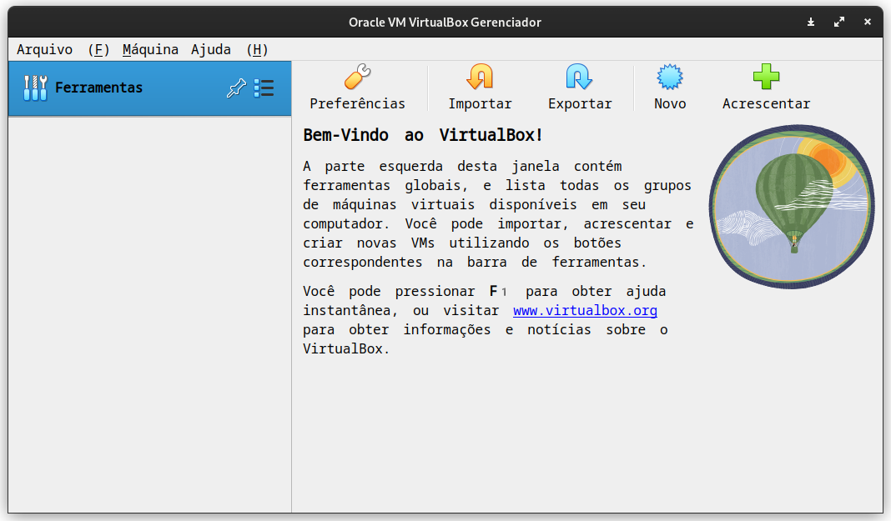

Básico necessário sobre Vagrant
Vagrant é uma ferramenta para provisionamento de máquinas virtuais. Dizendo de forma simples, ele cria e configura máquinas virtuais usando um arquivo de configuração chamado Vagrantfile. Nesse arquivo podemos descrever como nossas vms serão configuradas.
Exemplo de um arquivo do Vagrant:
A linha destacada é referente a um box do Vagrant.Vagrant boxes
Um box do vagrant no nosso contexto é uma máquina virtual pré-fabricada por uma pessoa. Existem milhares delas e elas podem ser acessadas no Vagrant Cloud

Eu optei por usar máquina do arch linux para iniciarmos nossa configuração.
Criando uma máquina virtual
Nosso primeiro passado é copiar o seguinte Vagrantfile:
e colocar no diretório do nosso projeto. Que vamos inicialmente chamar de ansible-lab.
Dessa forma podemos criar nossa máquina virtual usando um simples comando:
O resultado deve ser algo parecido com isso:
Bringing machine 'default' up with 'virtualbox' provider...
==> default: Importing base box 'archlinux/archlinux'...
==> default: Matching MAC address for NAT networking...
==> default: Checking if box 'archlinux/archlinux' version '20221101.99038' is up to date...
==> default: Setting the name of the VM: ansible_lab_default_1668393945684_70462
==> default: Clearing any previously set network interfaces...
==> default: Preparing network interfaces based on configuration...
default: Adapter 1: nat
==> default: Forwarding ports...
default: 22 (guest) => 2222 (host) (adapter 1)
==> default: Booting VM...
==> default: Waiting for machine to boot. This may take a few minutes...
default: SSH address: 127.0.0.1:2222
default: SSH username: vagrant
default: SSH auth method: private key
default: Warning: Connection reset. Retrying...
default: Warning: Remote connection disconnect. Retrying...
default:
default: Vagrant insecure key detected. Vagrant will automatically replace
default: this with a newly generated keypair for better security.
default:
default: Inserting generated public key within guest...
default: Removing insecure key from the guest if it's present...
default: Key inserted! Disconnecting and reconnecting using new SSH key...
==> default: Machine booted and ready!
==> default: Checking for guest additions in VM...
==> default: Mounting shared folders...
default: /vagrant => /home/z4r4tu5tr4/ansible_lab
E ele criará uma máquina virtual com archlinux no nosso virtualbox.
OBS: Esse comando pode demorar um pouco pois ele vai baixar um hd virtual do archlinux e instalar no seu virtualbox.

Agora que temos uma máquina virtual podemos partir para o segundo passo. Que é criar dois nós para trabalhar com ansible.
Destruindo a máquina criada
Caso você tenha problemas ou queira simplesmente destruir a máquina virutal. O vagrant pode destruir de forma simples a vm e é isso que faremos agora.
Com isso podemos ter nosso ambiente limpo outra vez: 
Configurando mais de uma máquina virtual
Agora que entendemos a dinâmica de criação de vms do vagrant, podemos configurar duas máquinas para o ansible. Uma que vamos chamar de main que será de onde chamaremos o ansible e uma que será controlada por ele. Que se chamará somente arch.
Para isso, só precisamos alterar nosso Vagrantfile:
Vagrant.configure("2") do |config|
config.vm.define "main" do |main|
main.vm.box = "archlinux/archlinux"
end
config.vm.define "arch" do |arch|
arch.vm.box = "archlinux/archlinux"
end
end
Agora temos duas máquinas virtuais. Ambas configuradas com archlinux. Porém cada uma tem uma função diferente na nossa rede.
O vagrant pode subir uma única vm ou as duas de uma vez: